Field photos from the systems I operated and commissioned.
From my time running HVAC and utility systems at Eskayef Pharmaceuticals, 2019–2021.
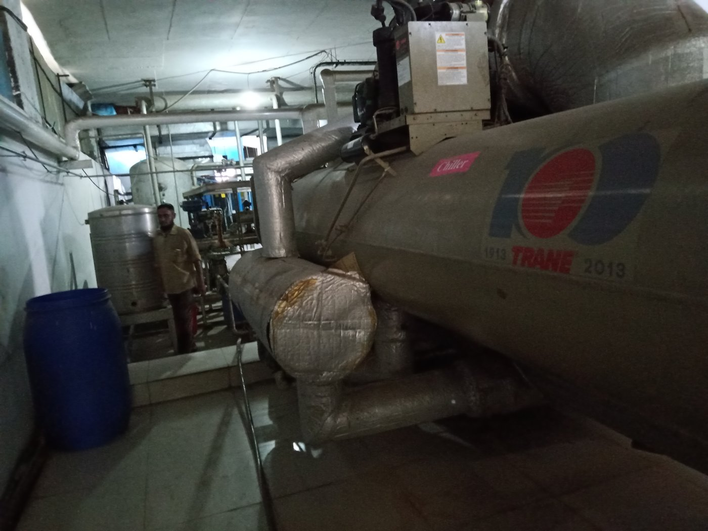
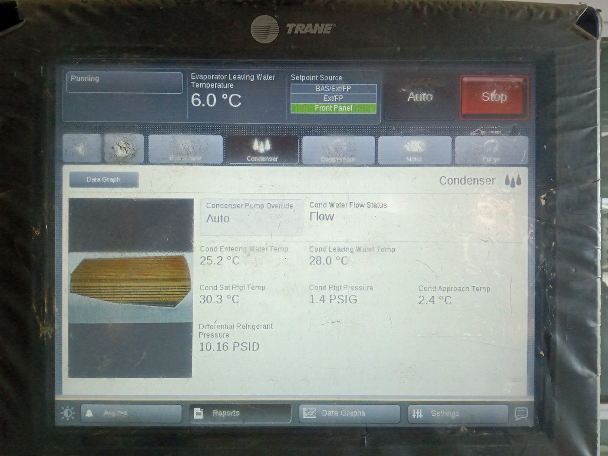
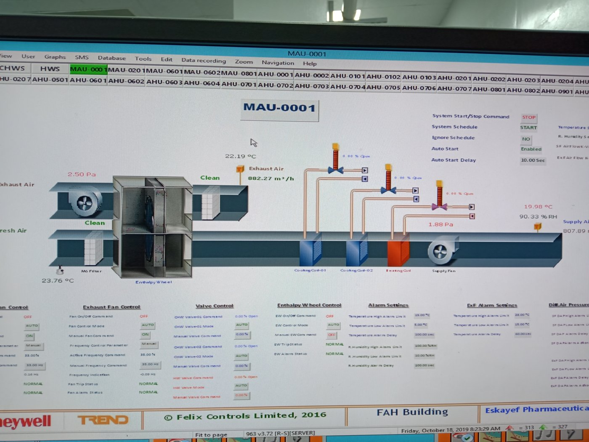
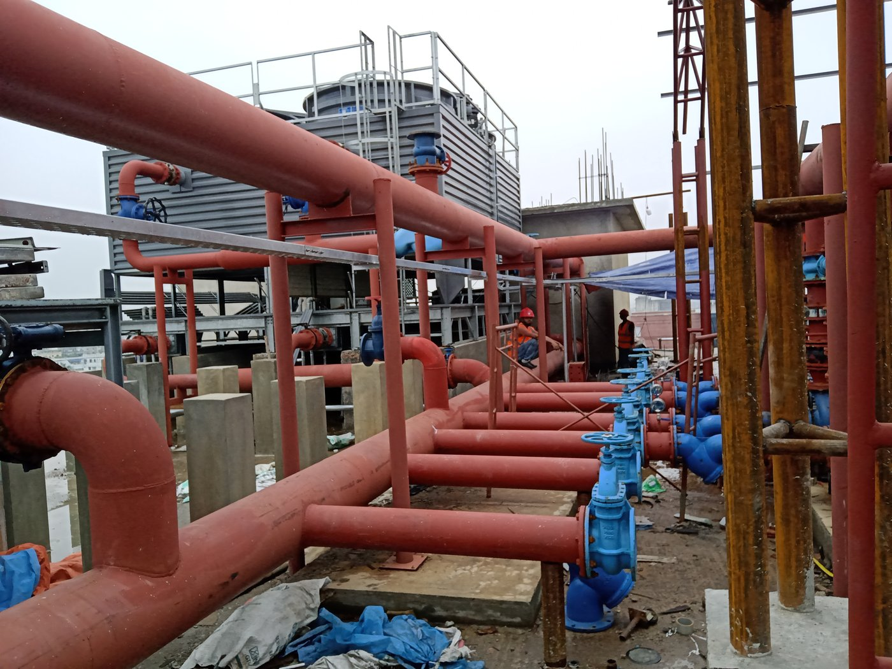
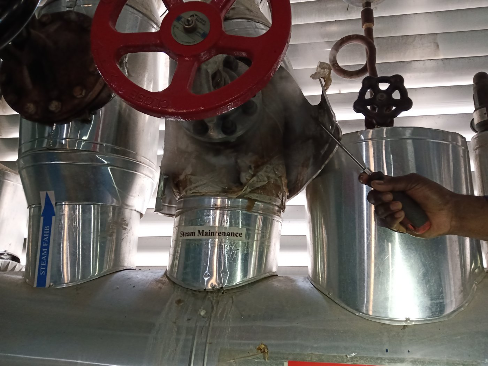
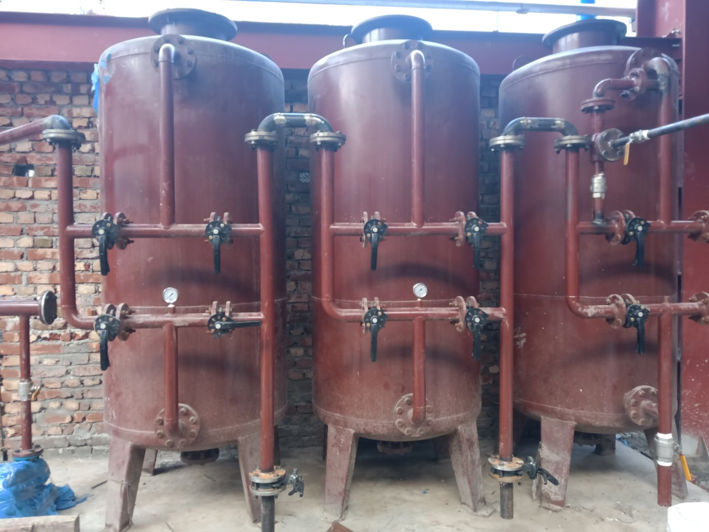
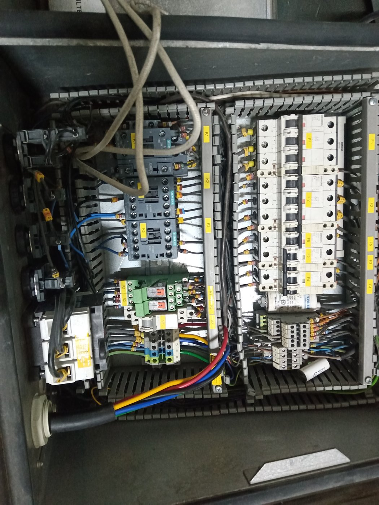
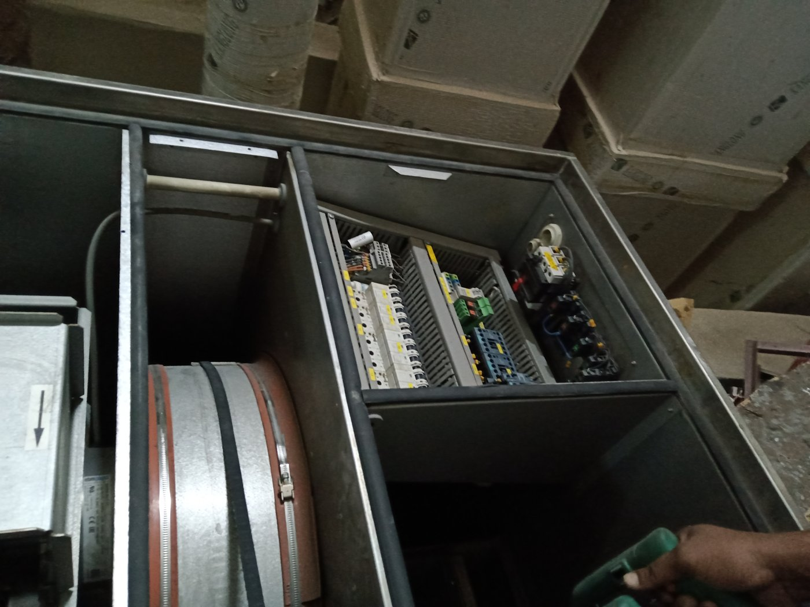
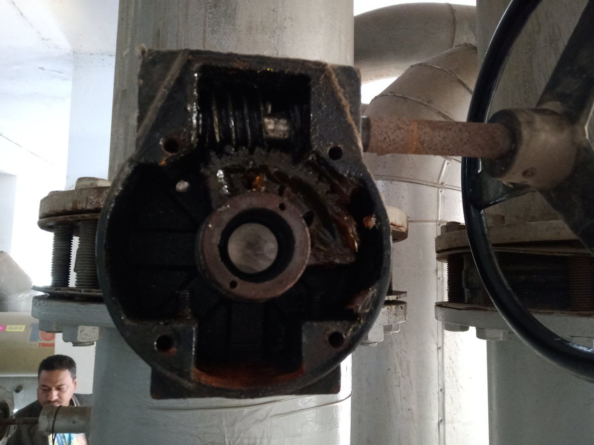
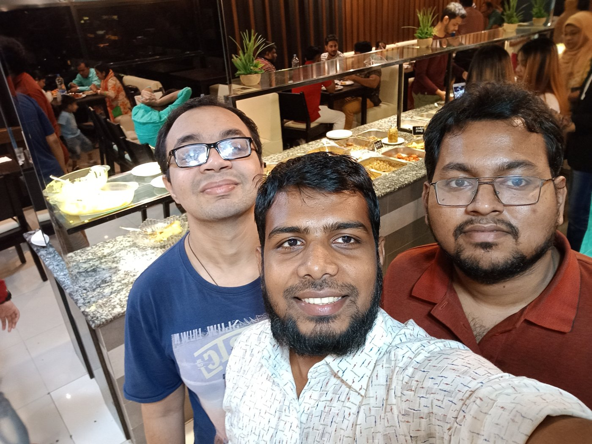
From my industrial training at AST Beverage Ltd., Narayanganj, 2018.
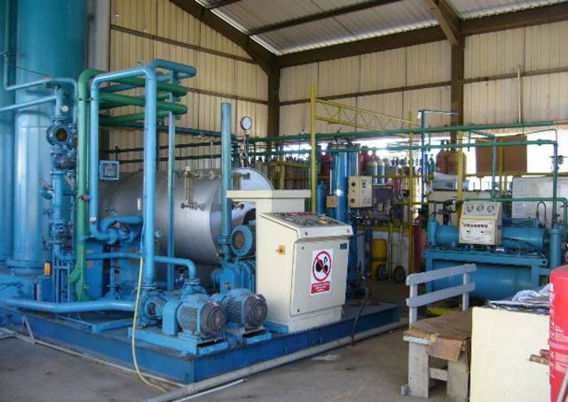
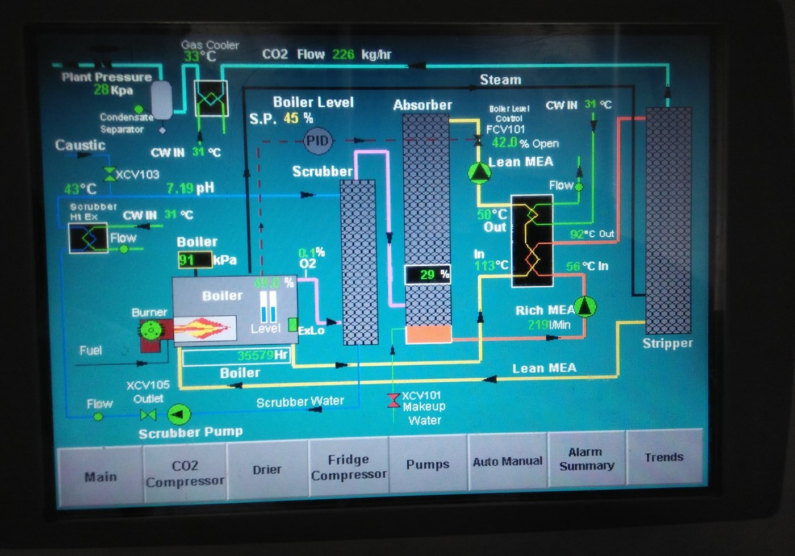
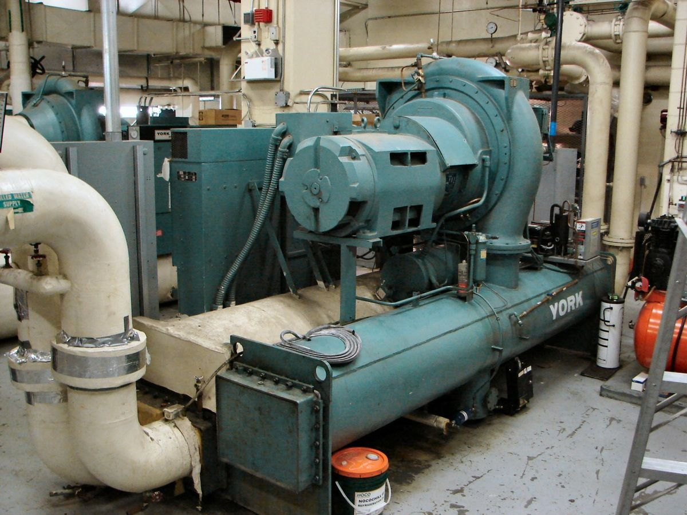
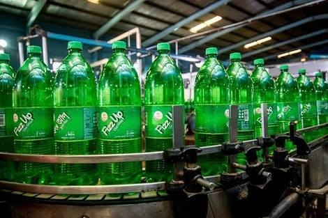